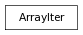

A general purpose iterator on Arrays.
ArrayIter allows to iterate on one or more specified axis of an Array, in any order.
For an Array of n dimensions, iterator on p axis will yield sub-arrays of n-p dimensions, numerical components if n-p is 0.
>>> A = Array(range(1, 28), shape=(3, 3, 3))
>>> print A.formated()
[[[1, 2, 3],
[4, 5, 6],
[7, 8, 9]],
<BLANKLINE>
[[10, 11, 12],
[13, 14, 15],
[16, 17, 18]],
<BLANKLINE>
[[19, 20, 21],
[22, 23, 24],
[25, 26, 27]]]
>>> [a for a in A]
[Array([[1, 2, 3], [4, 5, 6], [7, 8, 9]]), Array([[10, 11, 12], [13, 14, 15], [16, 17, 18]]), Array([[19, 20, 21], [22, 23, 24], [25, 26, 27]])]
>>> [a for a in ArrayIter(A, 0)]
[Array([[1, 2, 3], [4, 5, 6], [7, 8, 9]]), Array([[10, 11, 12], [13, 14, 15], [16, 17, 18]]), Array([[19, 20, 21], [22, 23, 24], [25, 26, 27]])]
>>> [a for a in ArrayIter(A, 1)]
[Array([[1, 2, 3], [10, 11, 12], [19, 20, 21]]), Array([[4, 5, 6], [13, 14, 15], [22, 23, 24]]), Array([[7, 8, 9], [16, 17, 18], [25, 26, 27]])]
>>> [a for a in ArrayIter(A, 2)]
[Array([[1, 4, 7], [10, 13, 16], [19, 22, 25]]), Array([[2, 5, 8], [11, 14, 17], [20, 23, 26]]), Array([[3, 6, 9], [12, 15, 18], [21, 24, 27]])]
>>> [a for a in ArrayIter(A, 0, 1)]
[Array([1, 2, 3]), Array([4, 5, 6]), Array([7, 8, 9]), Array([10, 11, 12]), Array([13, 14, 15]), Array([16, 17, 18]), Array([19, 20, 21]), Array([22, 23, 24]), Array([25, 26, 27])]
>>> [a for a in ArrayIter(A, 0, 2)]
[Array([1, 4, 7]), Array([2, 5, 8]), Array([3, 6, 9]), Array([10, 13, 16]), Array([11, 14, 17]), Array([12, 15, 18]), Array([19, 22, 25]), Array([20, 23, 26]), Array([21, 24, 27])]
>>> [a for a in ArrayIter(A, 0, 1, 2)]
[1, 2, 3, 4, 5, 6, 7, 8, 9, 10, 11, 12, 13, 14, 15, 16, 17, 18, 19, 20, 21, 22, 23, 24, 25, 26, 27]
>>> [a for a in ArrayIter(A, 0, 2, 1)]
[1, 4, 7, 2, 5, 8, 3, 6, 9, 10, 13, 16, 11, 14, 17, 12, 15, 18, 19, 22, 25, 20, 23, 26, 21, 24, 27]
ArrayIter iterators support __len__, __getitem__, __setitem__ and __delitem__ methods, it can be used to set whole sub-arrays in any order (for instance rows or columns in MatrixN)
>>> A = Array(range(1, 10), shape=(3, 3))
>>> print A.formated()
[[1, 2, 3],
[4, 5, 6],
[7, 8, 9]]
>>> [a for a in ArrayIter(A, 0, 1)]
[1, 2, 3, 4, 5, 6, 7, 8, 9]
>>> len(ArrayIter(A, 0, 1))
9
>>> ArrayIter(A, 0, 1)[5:9] = [4, 3, 2, 1]
>>> print A.formated()
[[1, 2, 3],
[4, 5, 4],
[3, 2, 1]]
>>> [a for a in ArrayIter(A, 1)]
[Array([1, 4, 3]), Array([2, 5, 2]), Array([3, 4, 1])]
>>> len(ArrayIter(A, 1))
3
>>> ArrayIter(A, 1)[1] = [7, 8, 9]
>>> print A.formated()
[[1, 7, 3],
[4, 8, 4],
[3, 9, 1]]
>>> ArrayIter(A, 0)[1] = 0
>>> print A.formated()
[[1, 7, 3],
[0, 0, 0],
[3, 9, 1]]
it.next() -> the next value, or raise StopIteration
it.toArrayCoords(index, default=None) –> list or tuple
Converts an iterator item index (item of number index in the iterator) for that Array iterator to a tuple of axis coordinates for that Array, returns a single coordinates tuple or a list of coordinate tuples if index was a slice. If index is a multi-index (a tuple), the first element if index is checked against the iterator and the remaining elements are considered indices on the iterated sub-array (s).
>>> A = Array(range(1, 10), shape=(3, 3))
>>> print A.formated()
[[1, 2, 3],
[4, 5, 6],
[7, 8, 9]]
>>> [a for a in ArrayIter(A, 0, 1)]
[1, 2, 3, 4, 5, 6, 7, 8, 9]
>>> it = ArrayIter(A, 0, 1)
>>> it[4]
5
>>> it.toArrayCoords(4)
(1, 1)
>>> A[1, 1]
5
>>> it[1:4]
Array([2, 3, 4])
>>> it.toArrayCoords(slice(1, 4))
[(0, 1), (0, 2), (1, 0)]
>>> [a for a in ArrayIter(A, 1)]
[Array([1, 4, 7]), Array([2, 5, 8]), Array([3, 6, 9])]
>>> it = ArrayIter(A, 1)
>>> it[0]
Array([1, 4, 7])
>>> it.toArrayCoords(0)
(None, 0)
>>> it.toArrayCoords(0, default=slice(None))
(slice(None, None, None), 0)
>>> A[:, 0]
Array([1, 4, 7])
>>> it.toArrayCoords((0, 1))
(1, 0)
>>> it[0, 1]
4
>>> A[1, 0]
4